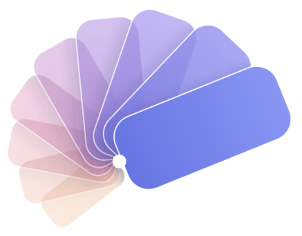
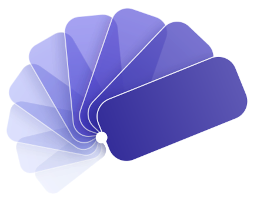
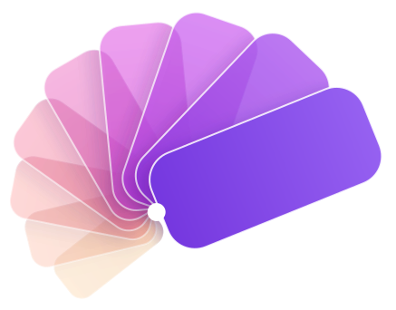
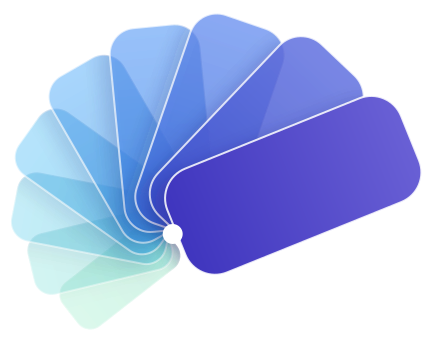
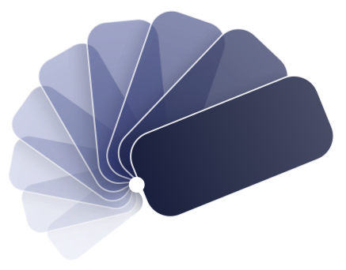
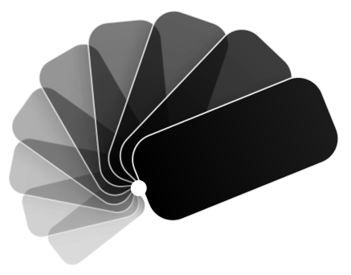
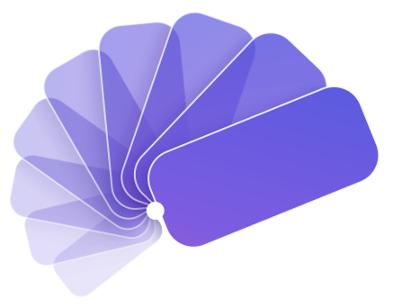

扇
一摞词卡绕着同一个点旋开，一张比一张大。上面是彩色版，下面是线条版
渐变配色 · 五个选项

破晓
页面现在的四个色标：后面是暖的橙和粉，往前变成紫，最前面一张落在蓝紫上
MnemoflowMnemoflow

靛蓝
只用一个色相，从浅蓝紫走到深靛蓝。最稳，最像一个工具类产品的标志
MnemoflowMnemoflow

晚霞
从杏黄经过玫红走到紫。最暖、最抢眼，和页面的“黄昏”天色是一套
MnemoflowMnemoflow

潮汐
从薄荷绿经过天蓝走到靛蓝。清爽，和学习、专注这类感觉最搭
MnemoflowMnemoflow

墨蓝
从灰蓝走到页面文字用的那个深蓝。几乎是单色，最克制
MnemoflowMnemoflow
黑白版 · 不带底


Mnemoflow
Mnemoflow
纯黑和纯白两张，背景透明。九张卡只靠不透明度分出前后，最前面一张是实的
彩色版 · 不带底


Mnemoflow
Mnemoflow
最早那一版，去掉了外面的圆角框：九张卡旋开，越往前越大、越不透明。浅色底上用渐变色，深色底上用白色
线条版 · 应用图标
深色底、白底、不带底的纯图形。大尺寸用的是九张卡的版本，线从后往前一点点变粗，最前面那张卡上有一行“字”和一个孔
小尺寸
Mnemoflow · 这一页看完…
Mnemoflow · 这一页看完…
32 像素以下换成四张卡的简化版，线更粗，不然会糊。最右边是它在浏览器标签页上的样子
导航栏
Mnemoflow
Mnemoflow
Mnemoflow
前两个是不带底的纯线条，跟着文字颜色走；第三个是带深色底的小方块